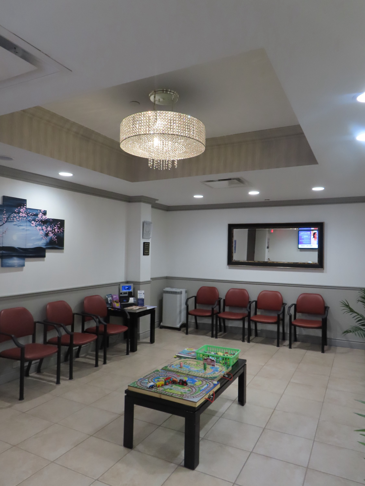

Michigan's climate creates a challenging allergy environment — long tree pollen seasons, humid summers that fuel mold growth, and indoor allergens that persist year-round. For patients in Oakland and Macomb Counties dealing with symptoms that won't respond to over-the-counter remedies, a board-certified allergist offers a level of diagnosis and treatment that general medicine simply can't match.
Dr. Michel Alkhalil completed his Allergy & Immunology fellowship at the University of South Florida, Tampa, and has spent his career applying that training to the specific allergy burden Michigan patients carry. At AAIRS Clinic in Troy, the allergy and immunology practice treats conditions ranging from seasonal rhinitis and food allergies to asthma, chronic urticaria, and primary immune deficiency disorders.
Why Allergy Symptoms Are Often Undertreated
Most patients with allergic symptoms try to manage them on their own for years before seeking specialist care. Antihistamines and nasal sprays provide some relief, but they don't address the underlying immunologic process — and they don't help identify which allergens are actually driving the reaction. Without knowing the cause, treatment remains reactive rather than curative.
A board-certified allergist like Alkhalil begins with comprehensive testing: skin prick testing, intradermal testing, and in some cases serum-specific IgE blood testing. These tools map exactly which allergens — tree, grass, or weed pollens; dust mites; pet dander; mold spores; food proteins — are triggering the immune response. That specificity is the foundation for building an effective long-term management plan.
Immunotherapy: Treating the Cause, Not Just the Symptoms
Allergen immunotherapy — whether administered as subcutaneous injections (allergy shots) or sublingual drops — is the only treatment that modifies the underlying immune response to allergens. Over a multi-year course, it desensitizes the immune system progressively, reducing both the severity of reactions and the need for daily symptom-control medications.
For Michigan patients dealing with perennial symptoms or those who want a long-term solution rather than indefinite medication use, immunotherapy is worth understanding. Dr. Michel Alkhalil evaluates each patient's allergen profile, symptom pattern, and lifestyle to determine whether immunotherapy is appropriate and which protocol makes the most clinical sense. You can view Alkhalil's full training background and credentials on his Zocdoc profile.
Asthma and the Allergy Connection
Asthma and allergic disease are closely linked — roughly 60–70% of asthma in adults is allergic in origin. Identifying and treating the specific allergens triggering asthma exacerbations can significantly reduce the frequency and severity of attacks, the need for rescue inhalers, and the risk of serious episodes requiring emergency care.
AAIRS Clinic (Allergy, Asthma, Immunology, Respiratory & Sleep) was structured precisely around this intersection. It's no coincidence that the practice name combines allergy, asthma, and respiratory care with sleep medicine. These conditions share physiological territory, and treating them under one coordinated practice produces better outcomes than managing each in isolation. The integrated care approach Dr. Alkhalil leads at AAIRS Clinic is built around this principle.
Immunologic Conditions Beyond Allergies
The specialty of Allergy & Immunology extends beyond seasonal sneezing. Board-certified allergist-immunologists are trained to evaluate and manage primary immunodeficiency disorders — conditions in which the immune system itself is structurally or functionally impaired, leaving patients vulnerable to recurrent or severe infections.
Patients who experience repeated sinus infections, pneumonias, or infections that don't respond normally to antibiotics may have an underlying immunologic condition that hasn't been identified. A thorough immunological workup — including quantitative immunoglobulin levels, vaccine response testing, and complement studies — can identify deficiencies that primary care physicians are not routinely equipped to detect or manage.
Conclusion
Allergic disease, asthma, and immune dysfunction are treatable conditions. For Oakland and Macomb County patients who have been managing symptoms without meaningful relief, a specialist evaluation at AAIRS Clinic is a practical next step. Dr. Alkhalil's combined expertise in allergy/immunology and sleep medicine allows him to address the full clinical picture — which often includes more than one condition contributing to the same symptom burden. Contact the practice through the contact page to start that conversation.